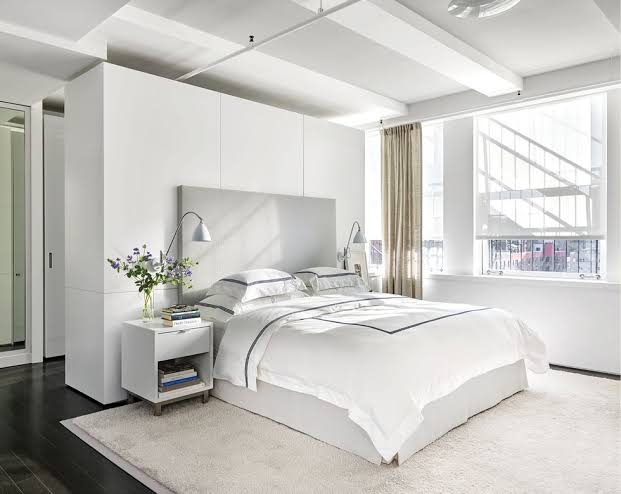

In . Attic bedrooms exist in some houses; since they are only separated from the outside air by the roof they are typically cold in winter and may be too hot in summer. The slope of the rafters supporting a pitched roof also makes them inconvenient. In houses where servants were living in they often used attic bedrooms.
In the 14th century the lower class slept on mattresses that were stuffed with hay and broom straws. During the 16th century mattresses stuffed with feathers started to gain popularity, with those who could afford them. In the 18th century cotton and wool started to become more common. The first coil spring mattress was not invented until 1871. The most common and most purchased mattress is the innerspring mattress, though a wide variety of alternative materials are available including foam, latex, wool, and even silk.
The variety of firmness choices range from relatively soft to a rather firm mattress. A bedroom may have bunk beds if two or more people share a room. A chamber pot kept under the bed or in a nightstand was usual in the period before modern domestic plumbing and bathrooms in dwellings.
<
Furniture and other items in bedrooms vary greatly, depending on taste, local traditions and the socioeconomic status of an individual. For instance, a primary bedroom (master bedroom) (also referred to as a "masters bedroom" in the Philippines may include a bed of a specific size (double, king or queen-sized); one or more dressers (or perhaps, a wardrobe armoire); a nightstand; one or more closets; and carpeting. Built-in closets are less common in Europe than in North America; thus there is greater use of freestanding wardrobes or armoires in Europe.
An individual's bedroom is a reflection of their personality, as well as social class and socioeconomic status, and is unique to each person. However, there are certain items that are common in most bedrooms. Mattresses usually have a bed set to raise the mattress off the floor and the bed often provides some decoration. There are many different types of mattresses.

Night stands are also popular. They are used to put various items on, such as an alarm clock or a small lamp. In the times before bathrooms existed in dwellings bedrooms often contained a washstand for tasks of personal hygiene. In the 2010s, having a television set in a bedroom is fairly common as well. 43% of American children from ages 3 to 4 have a television in their bedrooms. Along with television sets many bedrooms also have computers, video game consoles, and a desk to do work. In the late 20th century and early 21st century the bedroom became a more social environment and people started to spend a lot more time in their bedrooms than in the past.